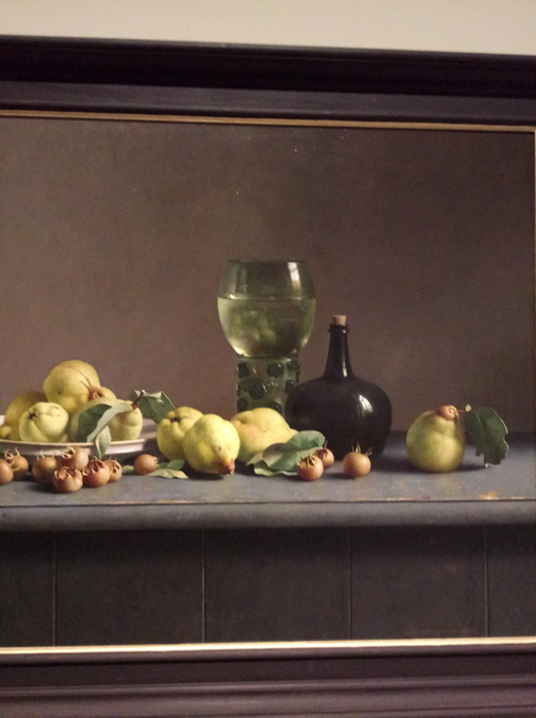
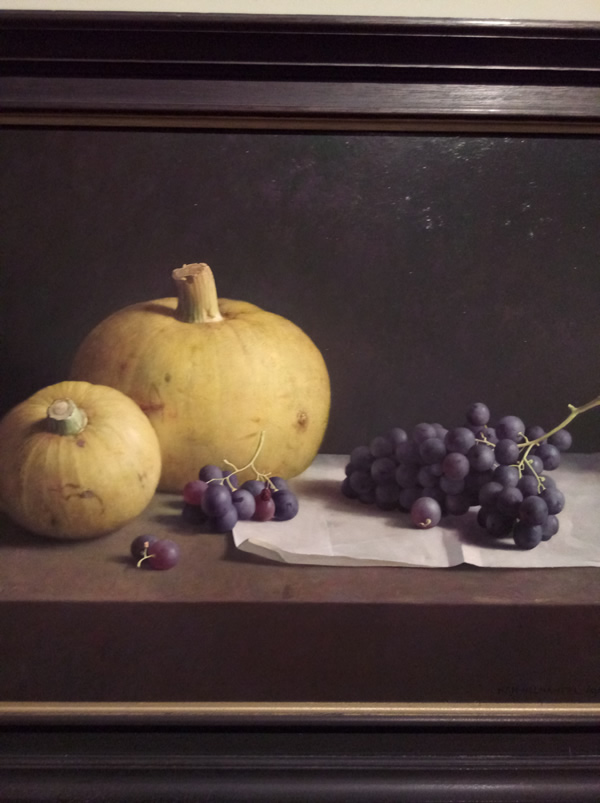
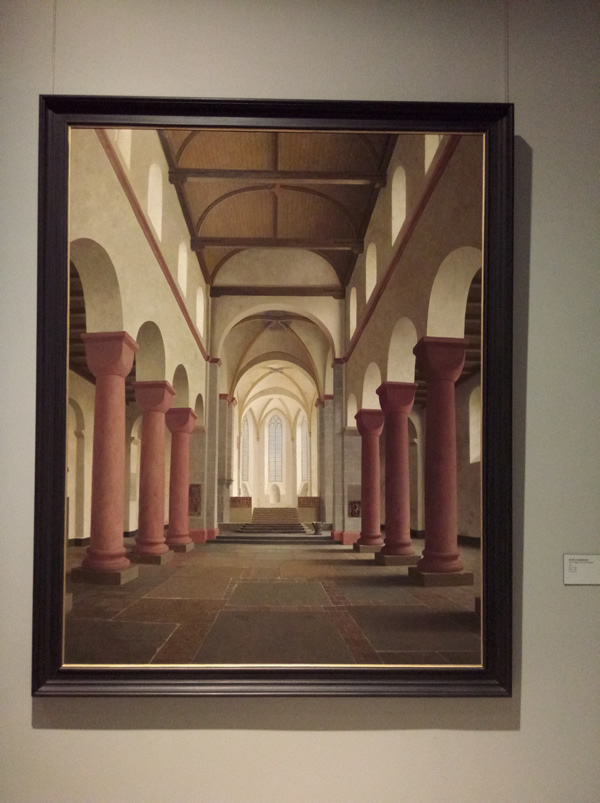

奇美博物館
經營理念 常設展 特展 影片 來館資訊 票價 地址
經營理念
幸福共好
奇美博物館成立的初衷，來自一份「分享」的心意，而分享的目的，則是希望「為大眾帶來幸福與溫暖」。博物館在創造幸福的前提下，從藝文平權、展覽活動、典藏維護、
人才培育等面向衍生出不同的理念與實踐行動。更重要的是，時時刻刻保持與大眾緊密的連結，與時俱進持續創新。期盼在用心耕耘之下，成為一個提升文化美學素養、療癒大眾心靈的幸福博物館。
常設展
兵器廳:奇美博物館自1993年起收藏古兵器，以歐洲、亞洲、非洲等地區的兵器與盔甲為主。分為「歐洲」與「非歐洲」兩大展區。
藝術廳:西洋藝術作品包括「藝術廳」、「雕塑大道」、「羅丹廳」。將13至20世紀的藝術作品分成四個時期、八個展間，跟隨策展邏輯循序觀賞，即可了解西洋藝術發展的時代概念。感受猶如置身國外美術館般的特別體驗，是許多台灣民眾印象深刻的主題場域。
動物廳:收藏主要有「動物標本」及「化石」兩大類，並以標本為大宗，除了臺灣本土特色動物外，還包含五大洲、南北極等地哺乳類、鳥類及多種瀕危動物的稀有標本。
樂器廳:分為兩大部分，第一部分規劃「世界民族樂器」、「走入管弦樂團」、「機械音樂家」三大展區。第二部分為獨立的「提琴」展區，精選藏品中各國最早製琴師的經典作品，同時設置提琴製作工坊、琴弓變革等內容。蒐藏樂器是為了與民眾分享美好的音樂，為人們帶來幸福與感動，更是守護這些樂器可以長長久久流傳下去。特別是名琴，許創辦人曾說，名琴是人類文化遺產，只是暫時由奇美保管，奇美有義務及責任保護這些大師的樂器作品，讓子孫不是只能在書上想像古老名琴的音色，而是能夠真實聆賞它的悠揚樂音。名琴除了展示之外，也出借給臺灣學子就學及比賽所用。
特展
凝視日常:荷蘭藝術家哈勒曼特
時代的臉孔



影片
來館資訊
開館時間：奇美博物館 9:30－17:30（售票截止 16:30 / 最後入場 17:00）戶外園區 9:00－18:30
休館日： 每週三 農曆除夕 特殊公告休館日
票價
常設展
| 全票 NT 200 |
一般民眾 |
| 優惠票 NT 150 |
7-22 歲學生
* 限持附有照片及出生日期之有效證件
65 歲以上長者
* 限持附有照片及出生日期之有效證件
|
| 免費票 憑證換票 |
設籍臺南市者
* 限持身分證
於臺南市就讀之學生
* 限持政府立案之臺南學校有效學生證者；不適用於空中大學、在職進修、社區大學、學習/語言中心
未滿 7 歲
* 限持附有照片及出生日期之有效證件
持有身心障礙手冊者及陪同者一名(須同時入場)
本人持有效期內之觀光局核發導遊/領隊證者
愛台灣博物館卡一般卡、兒少卡持有
|
地址